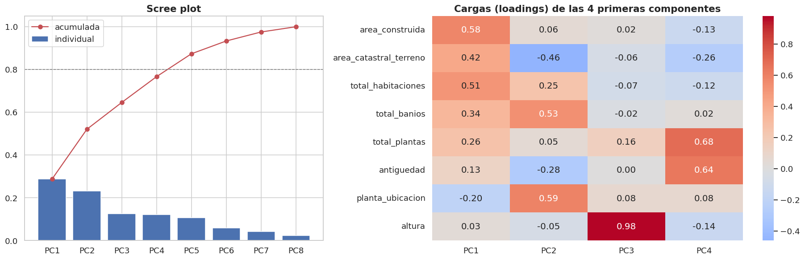
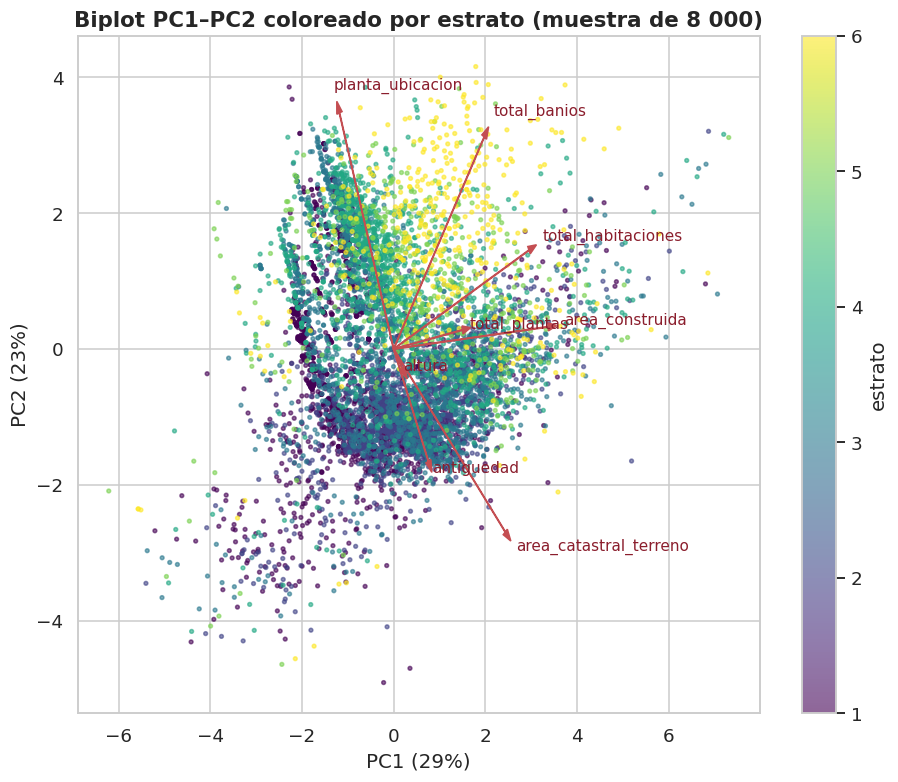
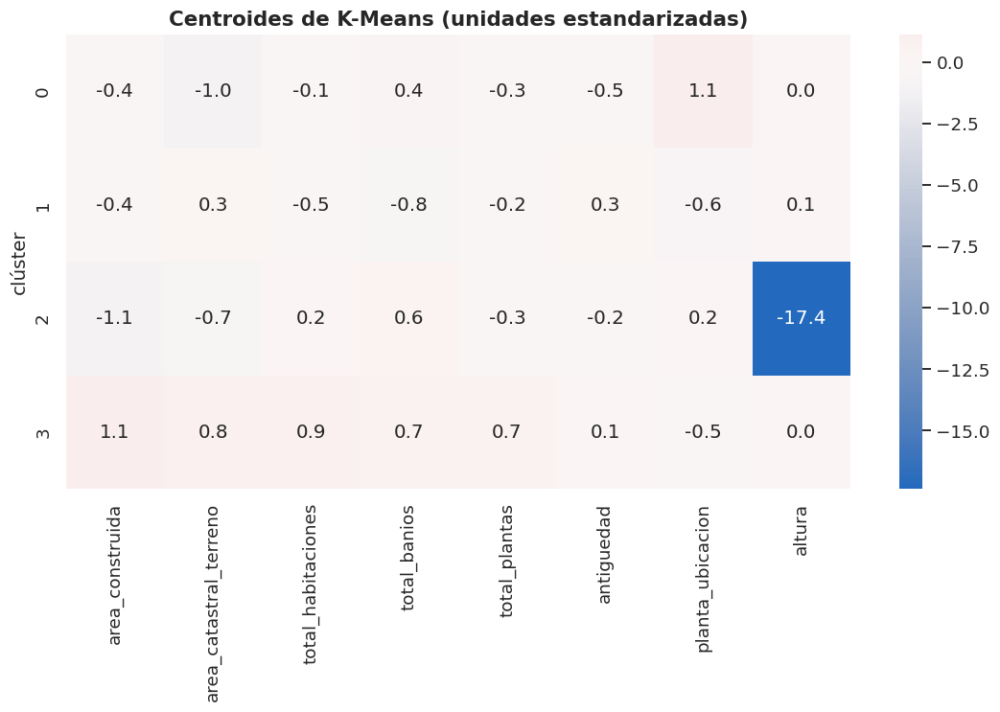
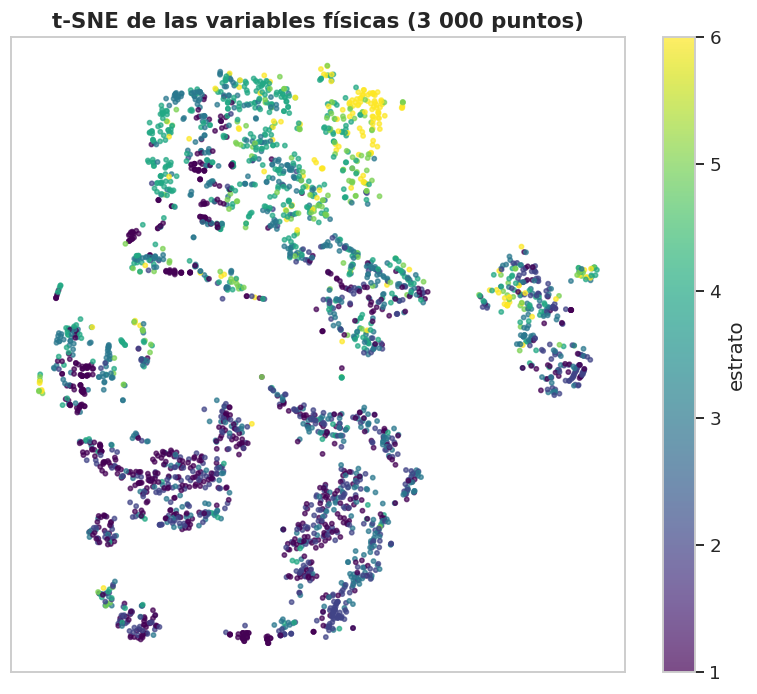

7. Análisis multivariado (sección 2.4)#
Autores: María Carolina Cantillo Orozco (200179105) y Juan Camilo Oñoro Araujo (200177329)
Reducción de dimensionalidad exploratoria (PCA; t-SNE solo como herramienta visual, no inferencial).
Outliers multivariados (distancia de Mahalanobis robusta e Isolation Forest).
Estructura de grupos o subpoblaciones (clustering exploratorio con K-Means).
Se usan las variables físicas numéricas en la escala en que entrarían al modelo (log1p en las asimétricas, estandarizadas). Todo con train.
Matriz para el análisis multivariado: 218,870 filas × 8 variables
7.1 PCA: varianza explicada y estructura#
# PCA con todas las componentes para ver cómo se reparte la varianza y cuántas
# dimensiones "efectivas" tienen las variables físicas. Se aplican tres
# criterios: % de varianza acumulada (80 % y 90 %), Kaiser y participation ratio.
pca = PCA(random_state=C.SEED).fit(Zs)
var = pd.DataFrame({"varianza explicada": pca.explained_variance_ratio_,
"acumulada": np.cumsum(pca.explained_variance_ratio_),
"autovalor": pca.explained_variance_},
index=[f"PC{i + 1}" for i in range(len(vars_pca))])
# argmax sobre un booleano devuelve la primera posición True; +1 porque las
# componentes se numeran desde 1.
k80 = int(np.argmax(var["acumulada"] >= 0.80) + 1)
k90 = int(np.argmax(var["acumulada"] >= 0.90) + 1)
# Kaiser: con datos estandarizados cada variable aporta varianza 1, así que
# una componente con λ > 1 resume más que una variable original.
kaiser = int((var["autovalor"] > 1).sum())
# Participation ratio = (Σλ)² / Σλ²: vale p si la varianza se reparte por igual
# entre las p componentes y 1 si toda está en una; mide la dimensión efectiva.
pr = pca.explained_variance_.sum() ** 2 / (pca.explained_variance_ ** 2).sum()
print(f"Componentes para 80 % de varianza: {k80} | para 90 %: {k90} | criterio de Kaiser (λ>1): {kaiser}")
print(f"Dimensionalidad efectiva (participation ratio): {pr:.2f} de {len(vars_pca)} variables")
var
Componentes para 80 % de varianza: 5 | para 90 %: 6 | criterio de Kaiser (λ>1): 3
Dimensionalidad efectiva (participation ratio): 5.41 de 8 variables
| varianza explicada | acumulada | autovalor | |
|---|---|---|---|
| PC1 | 0.288 | 0.288 | 2.302 |
| PC2 | 0.233 | 0.521 | 1.864 |
| PC3 | 0.125 | 0.646 | 1.002 |
| PC4 | 0.121 | 0.767 | 0.966 |
| PC5 | 0.107 | 0.874 | 0.855 |
| PC6 | 0.060 | 0.933 | 0.479 |
| PC7 | 0.042 | 0.976 | 0.336 |
| PC8 | 0.024 | 1.000 | 0.196 |


# Asociación de las 3 primeras componentes con el estrato. Se usa Spearman
# porque el estrato es ordinal (1–6) y la relación puede ser monótona pero no
# lineal. Responde si el eje de mayor varianza es también el más ligado al
# estrato (no tiene por qué: PCA es no supervisado).
pc_scores = pca.transform(Zs)[:, :3]
corr_pc = pd.DataFrame({f"PC{i + 1}": [stats.spearmanr(pc_scores[:, i], train[C.OBJETIVO])[0]]
for i in range(3)}, index=["Spearman con estrato"])
corr_pc
| PC1 | PC2 | PC3 | |
|---|---|---|---|
| Spearman con estrato | 0.251 | 0.476 | 0.189 |
Interpretación
Dimensionalidad. PC1 explica 28.8 % y PC2 23.3 % (52.1 % entre las dos). Hacen falta 5 componentes para el 80 % y 6 para el 90 %; el criterio de Kaiser retiene 3 y la dimensionalidad efectiva (participation ratio) es 5.41 de 8. Hay algo de redundancia, pero moderada, coherente con VIF < 3 (cap. 6): las variables físicas no se reducen a uno o dos ejes.
PC1 = «tamaño»: cargas positivas en área construida (0.58), habitaciones (0.51), terreno (0.42) y baños (0.34).
PC2 = «apartamento moderno frente a casa con lote»: positiva en piso de ubicación (0.59) y baños (0.53), negativa en terreno (−0.46) y antigüedad (−0.28). Es un eje de tipología: unidades en altura, más nuevas y con más baños frente a casas antiguas con terreno propio.
PC3 es prácticamente
alturasola (carga 0.98): recoge la poca variación de una variable casi constante, y PC4 combina plantas (0.68) y antigüedad (0.64).Relación con el estrato: es PC2 y no PC1 la más asociada (Spearman 0.476 frente a 0.251). PC3 tiene Spearman 0.189 pese a ser casi solo
altura(Spearman 0.048 con el estrato, cap. 6): comoalturavale 3 en más del 99 % de las filas, el orden de PC3 dentro de esa masa lo fijan sus cargas pequeñas (plantas, piso). Distingue mejor el estrato el tipo de vivienda (apartamento moderno en altura) que su tamaño. No se usa PCA dentro del modelo base: las variables originales son interpretables y n/p es enorme.
7.2 Outliers multivariados#
Mahalanobis robusta: la distancia de Mahalanobis clásica usa la media y
la covarianza, que los propios outliers distorsionan; por eso se estima con
el determinante de covarianza mínima (MCD) sobre una submuestra y se
marca como outlier a quien supera el cuantil 0.999 de una χ² con p grados de
libertad. Isolation Forest no asume forma elíptica: aísla puntos raros
con particiones aleatorias. Se fija contamination=0.01 (1 %) para que ambos
métodos marquen una proporción comparable; con "auto" el umbral depende de
la forma de los datos y en variables discretas puede marcar demasiado.
# Detección de outliers multivariados con dos criterios complementarios:
# Mahalanobis robusta (supone forma elíptica) e Isolation Forest (no la supone).
# Ambos se AJUSTAN en una submuestra aleatoria de 30 000 filas (el MCD es
# costoso y con 30 000 la estimación de centro y covarianza ya es estable) y
# luego se APLICAN a todas las filas de train.
rng = np.random.default_rng(C.SEED)
sub = rng.choice(len(Zs), min(30_000, len(Zs)), replace=False)
# Con variables discretas (conteos con muchos empates) el algoritmo C-step de
# MinCovDet emite avisos "Determinant has increased": son numéricos, no cambian
# el resultado de forma apreciable y se silencian para no ensuciar el libro.
import warnings
with warnings.catch_warnings():
warnings.filterwarnings("ignore", message="Determinant has increased", category=RuntimeWarning)
# MCD estima centro y covarianza con el subconjunto de puntos de menor
# determinante de covarianza, de modo que los outliers no inflan la
# covarianza ni se "esconden" (efecto máscara de la Mahalanobis clásica).
# support_fraction=0.9: usa el 90 % más central, es decir, tolera hasta un
# 10 % de contaminación; es más estable con variables discretas que el
# valor por defecto (~50 %), que con tantos empates puede dar una
# covarianza casi singular.
mcd = MinCovDet(random_state=C.SEED, support_fraction=0.9).fit(Zs[sub])
d2 = mcd.mahalanobis(Zs) # distancia de Mahalanobis AL CUADRADO de cada fila
# Bajo normalidad multivariada d² ~ χ² con p = 8 grados de libertad; el
# cuantil 0.999 deja fuera, en teoría, solo el 0.1 % de puntos "normales".
umbral = stats.chi2.ppf(0.999, df=Zs.shape[1])
out_maha = d2 > umbral
# Isolation Forest: 200 árboles para estabilizar el puntaje de anomalía;
# contamination=0.01 fija el umbral para marcar ~1 % de filas, una proporción
# comparable a la de Mahalanobis. n_jobs=-1 usa todos los núcleos.
iso = IsolationForest(n_estimators=200, contamination=0.01, random_state=C.SEED, n_jobs=-1).fit(Zs[sub])
out_iso = iso.predict(Zs) == -1 # predict devuelve −1 para anomalías y 1 para normales
res = pd.DataFrame({
"% outliers": [100 * out_maha.mean(), 100 * out_iso.mean(), 100 * (out_maha & out_iso).mean()],
}, index=["Mahalanobis robusta (χ² 0.999)", "Isolation Forest", "ambos"])
# Jaccard = |ambos| / |alguno|: cuánto coinciden los dos conjuntos de outliers
# (max(1, ...) evita dividir por cero si ninguno marcara nada).
print(f"Coincidencia (Jaccard) entre métodos: {(out_maha & out_iso).sum() / max(1, (out_maha | out_iso).sum()):.2f}")
res
Coincidencia (Jaccard) entre métodos: 0.20
| % outliers | |
|---|---|
| Mahalanobis robusta (χ² 0.999) | 2.439 |
| Isolation Forest | 0.935 |
| ambos | 0.571 |
# ¿Los outliers multivariados se reparten igual entre estratos? Se compara la
# distribución de estrato (%) de las filas marcadas por AMBOS métodos (las
# más claramente atípicas) con la del resto. Si se concentran en algunas
# clases, eliminarlos sesgaría la muestra de entrenamiento.
comp = pd.concat({
"outlier (ambos)": train.loc[out_maha & out_iso, C.OBJETIVO].value_counts(normalize=True),
"resto": train.loc[~(out_maha & out_iso), C.OBJETIVO].value_counts(normalize=True),
}, axis=1).sort_index().fillna(0).mul(100) # fillna(0): estratos sin outliers
comp.index = [C.NOMBRES_CLASES[i] for i in comp.index]
print("Distribución de estrato en outliers multivariados vs. resto (%):")
comp
Distribución de estrato en outliers multivariados vs. resto (%):
| outlier (ambos) | resto | |
|---|---|---|
| 1 Bajo-bajo | 11.040 | 25.625 |
| 2 Bajo | 14.800 | 19.895 |
| 3 Medio-bajo | 32.000 | 25.949 |
| 4 Medio | 16.880 | 16.856 |
| 5 Medio-alto | 11.920 | 6.057 |
| 6 Alto | 13.360 | 5.617 |
# Perfil de los outliers: mediana de cada variable en escala ORIGINAL (m²,
# conteos, años) para poder interpretar qué tipo de unidad son y juzgar si
# parecen errores de registro o combinaciones raras pero válidas.
perfil = pd.concat({"outliers": train.loc[out_maha & out_iso, vars_pca].median(),
"resto": train.loc[~(out_maha & out_iso), vars_pca].median()}, axis=1)
print("Mediana de cada variable:")
perfil
Mediana de cada variable:
| outliers | resto | |
|---|---|---|
| area_construida | 92.500 | 76.000 |
| area_catastral_terreno | 255.900 | 70.755 |
| total_habitaciones | 0.000 | 3.000 |
| total_banios | 0.000 | 1.000 |
| total_plantas | 1.000 | 1.000 |
| antiguedad | 16.000 | 16.000 |
| planta_ubicacion | 1.000 | 1.000 |
| altura | 3.000 | 3.000 |
Interpretación y decisión
Mahalanobis robusta marca 2.44 % de train e Isolation Forest 0.94 % (cerca del 1 % fijado con
contamination, que se calibra en la submuestra de ajuste). Solo 0.57 % coincide en ambos, y la coincidencia es baja (Jaccard = 0.20): los dos métodos miran cosas distintas (forma elíptica frente a aislamiento), así que «outlier» depende mucho del criterio.Los marcados por ambos son combinaciones raras, no errores evidentes: mediana de 0 habitaciones y 0 baños, 92.5 m² construidos y 256 m² de terreno (frente a 3, 1, 76 y 71 en el resto). Parecen lotes con construcciones menores o unidades sin espacios habitables registrados (p. ej. en obra o con ficha incompleta). Las reglas de limpieza del cap. 1 no los tocan: los ceros en habitaciones y baños quedaron como limitación abierta (cap. 1.7.3).
Están sobre-representados en estratos altos: el 25.3 % son estratos 5–6, frente al 11.7 % del resto (y solo 11.0 % son estrato 1 frente a 25.6 %). Eliminarlos quitaría justo casos de las clases minoritarias.
Decisión: se conservan; su influencia ya se limita con log1p + winsorización dentro del Pipeline.
# Se registra la decisión de conservar los outliers con su justificación
# cuantitativa (qué % son estrato 5–6 frente al resto), para que el capítulo
# del modelo la lea desde decisiones_eda.json.
ambos = out_maha & out_iso
# Si no hubiera ningún outlier común, el % queda en NaN en lugar de fallar.
pct_altos_out = 100 * train.loc[ambos, C.OBJETIVO].isin([5, 6]).mean() if ambos.any() else float("nan")
pct_altos_resto = 100 * train.loc[~ambos, C.OBJETIVO].isin([5, 6]).mean()
C.guardar_decision("outliers_multivariados", "conservar (sin eliminar filas)",
f"{100 * ambos.mean():.2f}% marcados por ambos métodos; {pct_altos_out:.0f}% de ellos son "
f"estrato 5-6 (vs {pct_altos_resto:.0f}% en el resto): eliminarlos sesgaría las clases "
"altas (cap. 7.2).")
[decisión registrada] outliers_multivariados = conservar (sin eliminar filas)
motivo: 0.57% marcados por ambos métodos; 25% de ellos son estrato 5-6 (vs 12% en el resto): eliminarlos sesgaría las clases altas (cap. 7.2).
7.3 Subpoblaciones: clustering exploratorio#
K-Means sobre las variables estandarizadas (submuestra de 30 000), eligiendo k con el coeficiente de silueta. El objetivo no es modelar (eso es la tesis) sino ver si hay grupos naturales y cómo se relacionan con el estrato.
# Elección de k para K-Means con el coeficiente de silueta (compara la
# distancia media de cada punto a su propio clúster con la del clúster vecino;
# va de −1 a 1 y valores altos indican grupos compactos y separados). Se usa
# la misma submuestra de 30 000 filas que en los outliers.
Xs = Zs[sub]
sil = {}
for k in range(2, 9): # k de 2 a 8
# n_init=5 reinicios con centroides distintos para no quedarse en un
# mínimo local; es suficiente para comparar k y más rápido que 10.
km = KMeans(n_clusters=k, n_init=5, random_state=C.SEED).fit(Xs)
# La silueta cuesta O(n²) en distancias: se calcula sobre 8 000 puntos.
sil[k] = silhouette_score(Xs, km.labels_, sample_size=8000, random_state=C.SEED)
sil = pd.Series(sil, name="silueta")
k_opt = int(sil.idxmax())
print(f"k con mayor silueta: {k_opt}")
sil.to_frame().T
k con mayor silueta: 4
| 2 | 3 | 4 | 5 | 6 | 7 | 8 | |
|---|---|---|---|---|---|---|---|
| silueta | 0.236 | 0.245 | 0.250 | 0.244 | 0.228 | 0.205 | 0.212 |
# Modelo final de K-Means con el k elegido (más reinicios, n_init=10, para una
# solución más estable) y su relación con el estrato: composición de estratos
# por clúster (% por fila), tamaño, condición de predio predominante y V de
# Cramér clúster–estrato como medida resumen de asociación.
km = KMeans(n_clusters=k_opt, n_init=10, random_state=C.SEED).fit(Xs)
t_sub = train.iloc[sub] # filas de train correspondientes a la submuestra
tab = pd.crosstab(km.labels_, t_sub[C.OBJETIVO], normalize="index").mul(100)
tab.columns = [C.NOMBRES_CLASES[c] for c in tab.columns]
tab["n"] = pd.Series(km.labels_).value_counts().sort_index().to_numpy()
# Moda de condicion_predio en cada clúster (PH, NPH, informal) para nombrarlo.
tab["condición predominante"] = [t_sub["condicion_predio"][km.labels_ == g].mode().iloc[0] for g in tab.index]
# reset_index alinea el estrato con las etiquetas (índice 0..n−1); sin él,
# pandas cruzaría por el índice original de train y la tabla saldría mal.
v_cl = E.cramers_v(pd.Series(km.labels_), t_sub[C.OBJETIVO].reset_index(drop=True))["V"]
print(f"V de Cramér clúster ~ estrato: {v_cl:.3f}")
tab
V de Cramér clúster ~ estrato: 0.308
| 1 Bajo-bajo | 2 Bajo | 3 Medio-bajo | 4 Medio | 5 Medio-alto | 6 Alto | n | condición predominante | |
|---|---|---|---|---|---|---|---|---|
| row_0 | ||||||||
| 0 | 19.758 | 3.007 | 27.369 | 31.448 | 9.120 | 9.298 | 10077 | PH_Unidad_Predial |
| 1 | 37.436 | 34.138 | 21.992 | 4.765 | 1.175 | 0.494 | 12341 | NPH |
| 2 | 90.698 | 0.000 | 0.000 | 9.302 | 0.000 | 0.000 | 86 | PH_Unidad_Predial |
| 3 | 12.220 | 19.891 | 28.655 | 18.810 | 10.472 | 9.952 | 7496 | NPH |

t-SNE (solo visual)#
t-SNE conserva vecindades locales pero distorsiona distancias globales y tamaños de grupos: no se interpreta cuantitativamente.

Interpretación
K-Means elige k = 4, pero la silueta es baja y casi igual en todos los k (0.205–0.250; k = 3, 4 y 5 quedan en 0.244–0.250): no hay grupos naturales bien separados, sino un continuo de tipologías.
Los clústeres se alinean sobre todo con la tipología: dos grupos NPH (casas pequeñas y casas grandes), uno PH (apartamentos) y un grupo diminuto de 86 unidades PH con
alturaanómala (centroide de −17.4 desviaciones, es decir, altura ≈ 1 frente al 3 casi universal, cap. 5), 91 % estrato 1. Con el estrato la asociación es apenas moderada (V = 0.31):clúster 1 (casas pequeñas, NPH, n = 12 341; área, habitaciones y baños por debajo de la media): 72 % estratos 1–2;
clúster 3 (casas grandes, NPH, n = 7 496; área, terreno, habitaciones, baños y plantas por encima de la media): mezcla de todos los estratos, centrada en 2–4 (con 20 % en 5–6);
clúster 0 (apartamentos PH, n = 10 077; piso alto, poco terreno, más nuevos): 59 % en estratos 3–4 y 18 % en 5–6, pero también 20 % en estrato 1.
Dentro de cada tipología hay varios estratos: las variables físicas separan razonablemente los extremos, pero no las clases intermedias.
Anticipa el resultado del modelo: hace falta información que las variables físicas no tienen, y esa información es la localización (cap. 8).